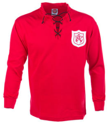
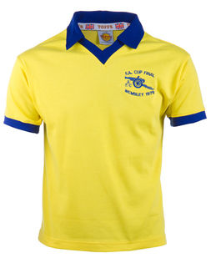
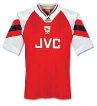
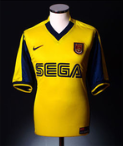
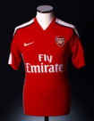

구단역사 / 구단의 변천사 / 수상이력
구단역사
- 아스날
- 1930년대의 잉글랜드 축구 지배
- 평범한 팀으로의 전락
- 뜻밖의 인물의 성공과 준우승 팀
- 조지 그레이엄의 성공과 비리
- 아르센 벵거의 시대
- 새로운 감독과 새 시작
- 유니폼
- 홈구장
- 서포터
- 소유권과 재정
- 아스날의 경영진들과 주주들
- 대중문화 속의 아스날
아스날
아스널 풋볼 클럽은 런던을 연고지로 홀로웨이의 에미레이츠 스타디움을 홈구장으로 하는 잉글랜드의 축구 클럽이다. 잉글랜드의 1부 리그인 프리미어리그에 속해 있다. 아스널 FC는 현재 잉글랜드에서 가장 성공한 클럽들 중 하나이며, 13번의 리그 우승을 이뤘고, FA컵에서 13번의 우승으로 맨체스터 유나이티드를 제치고 잉글랜드 최다 우승 기록을 가지고 있다. 그리고 당시 풋볼 리그 1919-20 시즌부터 시작하여 그 동안 한번도 2부 리그로 강등되지 않아 연속적으로 가장 오랫동안 1부 리그에 잔류하고 있는 기록을 세우고 있는 팀이기도 하다.
아스널은 제2차 세계 대전 이후인 1970-71 시즌에 리그와 FA컵에서 우승하면서 20세기에 더블을 기록한 두 번째 팀이 되었다. 이후 지금까지 두 번의 리그와 FA컵 우승 더블, 한 번의 컵 더블, 그리고 프리미어리그 최초의 무패 우승을 기록하였다. 또한 2005-06년 UEFA 챔피언스리그 결승전에 진출해, 런던 연고 축구단으로는 UEFA 챔피언스리그 결승전에 진출한 첫 번째 팀이 되기도 하였다.
아스널의 홈 유니폼 색깔은 전통적으로 레드 앤 화이트(Red & White)였지만 이는 시간이 흘러감에 따라 점차 변해 갔다. 연고지도 클럽 창단시에는 켄트주 울위치였으나 1913년 북런던의 하이버리 아스널 스타디움으로 옮겼다. 2006년엔 다시 하이버리와 가까운 홀로웨이의 에미레이트 스타디움으로 홈구장을 옮겼다.
아스널은 광대한 팬층을 보유하고 있으며, 몇몇 팀들과는 오랜 라이벌 관계를 유지해오고 있다. 그중에서도 토트넘 홋스퍼 FC와 강한 라이벌 관계이며 팬들은 이들의 경기를 북런던 더비라고 부르고 있다.
아스널은 잉글랜드 축구에서 가장 부유한 클럽 중 하나로 여겨지고 있으며(2008년 당시 6억 유로로 평가받았다), 그들이 달성한 위업은 영국 축구 문화에서 정기적으로 다뤄지고 있다. 팀의 애칭에는 거너스(Gunners)라고 불린다.
현재 감독은 우나이 에메리이다. 아스널 풋볼 클럽의 창단, 북런던으로의 이전과 토트넘과의 악연 아스널 풋볼 클럽은 1886년에 다이얼 스퀘어(Dial Square)라는 이름으로 창단된 게 그 시초라 할 수 있다. 런던 남동부에 있는 울위치의 왕립 무기고(Royal Arsenal, 로열 아스널)에서 일하던 노동자들이 모여 만들어진 이 축구 클럽은 1891년에 프로 구단으로 독립하였으며, 1893년 울위치 아스널(Woolwich Arsenal)로 이름을 바꾸고 풋볼 리그(Football League)에 가입하였다. 하지만 울위치 아스널은 그들의 연고지인 울위치가 지리적으로 고립되어 있어 관중들이 다른 구단들보다 비교적 적었고, 이는 결국 구단이 재정적 문제에 빠지게 되는 원인이었다. 1910년, 헨리 노리스가 구단을 인수할 때는 파산이 유력해 보였었다. 노리스는 연고지를 다른 곳으로 옮기기로 했고, 1913년, 2부리그로 강등된 뒤 연고지를 북런던에 있는 하이버리의 아스널 스타디움으로 옮기게 된다. 그리고 그들은 이듬해 구단 이름에서 울위치를 빼버리고 완벽하게 현재의 아스널 FC로 바뀌게 된다.
아스널은 1919년, 2부 리그에서 5위를 차지해 승격에 실패했지만 그럼에도 불구하고 1부 리그 팀 참가를 20개 팀에서 22개 팀으로 늘리는 과정에서 원래 1부 리그 19위로 2부 리그로 강등 예정이었던 첼시는 남게 되었고 2부 리그 1위와 2위가 1부 리그로 승격 되고 3위 반즐리나 4위 울버햄튼 중 한 팀이 승격할 예정이었으나 아스널의 구단주 노리스는 아스널이 처음으로 풋볼 리그에 가입한 남부 클럽임을 강조해 풋볼 리그 역사에 기여한 점을 들어 풋볼 리그측을 설득하였고, 풋볼 리그측은 이에 동의해 투표 방식으로 1부 리그 최하위 팀과 아스널 중 한 팀을 1부리그에 승격시키기로 결정을 한다. 결국 아스널이 선거에서 승리해 아스널이 1부리그로 승격되었다.
이때 아스널에게 패해 2부 리그로 강등된 그 1부 리그 최하위 팀은 바로 이웃의 토트넘이었다. 이 사건 이후 아스널은 현재까지 단 한 번도 2부리그로 강등되지 않는 기록을 세우게 된다.
1930년대의 잉글랜드 축구 지배
1925년, 허버트 채프먼이 아스널의 감독이 된다. 채프먼은 이미 허더스필드 타운을 이끌고 1923 - 24, 24 - 25 두 시즌 연속으로 리그 우승을 제패한 바 있었고, 그는 아스널의 첫 번째 성공시대를 가져다 준 감독이기도 하다. 그의 혁신적인 전술과 훈련은 이적시장에서 데려온 알렉스 제임스와 클리프 바스틴 등과 함께 1930년대 잉글랜드 축구 지배를 건설하게 된다. 채프먼의 지도 아래 아스널은 1930년, 첫 FA컵 우승과 1930 - 31, 1931 - 32시즌 리그 연속 우승을 차지하게 된다. 거기에 채프먼은 1932년, 아스널 스타디움 근처에 있는 런던 지하철역인 '길레스피 로드역'을 '아스널 지하철 역'으로 바꾸는 데에 배후에 있었다고도 전해졌다.
채프먼은 1934년 초, 급성 폐렴으로 사망했고 남은 시즌 동안은 아스널의 코치이자 2군 감독이었던 조 쇼가 임시 감독으로 이끌어 간다. 명장 채프먼 감독의 갑작스런 죽음에도 불구하고 아스널은 1933 - 34시즌, 3번째 리그 우승을 차지하게 된다. 이어 조지 앨리슨이 정식 감독으로서 아스널을 이끌게 되었고 부임 첫 시즌 만에 4번째 리그 우승을 차지하였고 그 다음 시즌에는 두 번째 FA컵 우승, 37 - 38시즌 5번째 리그 우승을 차지하게 된다. 하지만 이 우승을 마지막으로 1930년대 말기에 아스널의 중흥기를 이끌던 주요 선수들의 은퇴와 제2차 세계 대전 발발로 잉글랜드의 모든 축구 경기가 취소되어서 아스널은 점점 쇠퇴하기 시작하였다.
평범한 팀으로의 전락
전쟁이 끝난 뒤, 앨리슨의 후임인 탐 휘태커는 아스널에 두 번째 성공시대를 가져다 주게 되었다. 1947 - 48, 1952 - 53시즌 두 번의 리그 우승을 또 차지하였고, 1949 - 50시즌에는 3번째 FA컵 우승을 차지하게 된다. 하지만 그 후 돈이 부족해 1930년대 선수들과 동급인 선수들을 끌어오지 못했고, 결국 아스널은 5,60년대 대부분을 트로피 없이 보낸 평범한 팀으로 전락하게 되었다. 심지어 1962년부터 66년까지 감독을 맡았던 전(前) 잉글랜드 대표팀 주장 출신인 빌리 라이트도 감독으로서 아무 성공도 거두지 못하였다.
뜻밖의 인물의 성공과 준우승팀
빌리 라이트 감독이 물러난 1966년, 당시 아스널의 물리 치료사인 버티 미가 뜻밖의 감독이 되면서 아스널이 다시 트로피를 차지하기 시작한다. 두번의 리그 컵 결승에서 준우승에 그친 뒤, 아스널은 1969 - 70시즌, 인터시티스 페어스컵이란 유럽 대회에서 우승하게 된다. 이 인터시티스 페어스컵 우승은 아스널의 첫 유럽 대회 우승이었다. 이후 1970 - 71시즌, FA컵과 리그 우승 더블을 일궈내게 되었다.
하지만 아스널이 그 시대에 최강 팀이라 하기엔 무리였던 것이 1970 - 71시즌 후에는 준우승 팀이라 여겨질 정도로 준우승이 많았다. 아스널은 1972 - 73시즌 리그 2위에 머물렀고, 1971 - 72, 1977 - 78, 1979 - 80시즌 세 번의 FA컵 결승에서 모두 준우승에 머물렀다. 1979 - 80시즌에는 UEFA 컵 위너스 컵 결승에 진출했지만 승부차기 끝에 준우승에 머물렀다. 1978 - 79시즌에만 경기 막판 골로 맨체스터 유나이티드를 꺾고 5번째 FA컵 우승을 차지하였는데 이 경기는 명승부로 널리 알려져 있다.
조지 그레이엄의 성공과 비리
그 뒤로는 별달리 성적이 없다가 1986년, 조지 그레이엄이 감독으로 부임하면서 제3의 중흥기를 맞게 된다. 그레이엄 감독 첫 시즌인 1986 - 87시즌에 아스널은 처음으로 리그 컵 우승을 차지한다. 1988 - 89시즌에는 막판 극적인 골로 리버풀을 제치고 18년 만에 리그 우승을 차지하게 된다. 1990 - 91시즌, 그레이엄의 아스널은 단 1패만 기록하고 다시 리그 우승을 차지한다.
1992 - 93시즌에는 FA컵과 리그 컵을 우승하여 컵 더블을 기록하였고, 이듬해에는 아스널이 UEFA 컵 위너스 컵 우승을 차지해 두 번째 유럽 대회 우승을 기록하였다. 그레이엄의 평판은 90년대초 노르웨이의 한 축구 에이전트인 르네 하욱이 자신의 소속 선수인 존 젠슨과 팔 라이더센을 아스널로 이적시키는 과정에서 그레이엄 감독이 뇌물을 받았다고 폭로하여 더럽혀지게 되었고, 결국 1995년 그레이엄 감독은 해고 당하게 되며 1년간 감독직 자격을 박탈 당하게 된다. 그의 후임으로는 브루스 리오치가 오르게 되지만 한 시즌 만에 구단 운영진들과의 상호 합의하에 물러나게 된다.
아르센 벵거의 시대
브루스 리오치가 물러난 1996년, 훗날 아스널의 황금기를 이끌 구세주가 나타나게 되는데 그는 바로 프랑스의 아르센 벵거였다. 그는 아스널의 첫 번째 비영어권 감독이었다. 벵거 감독은 팀에 새로운 훈련 통치 및 몇몇 외국 용병 선수들과 잉글랜드의 재능있는 선수들을 잘 조합시킨 새로운 전술을 가져다 주었다. 아스널은 1997 - 1998 시즌, 리그 우승과 FA컵 우승으로 더블을 차지하였고, 그와 더불어 99 - 2000시즌에는 팀 창단 후 처음으로 UEFA컵 결승에 진출하였지만 아쉽게도 승부차기 끝에 갈라타사라이 SK에게 패해 우승이 좌절되었다.
하지만 2001 - 02시즌, 또다시 리그와 FA컵 더블을 차지하였다. 2002 - 03시즌에는 9번째 FA컵 우승을 차지하였고 이듬해인 2003 - 04시즌에는 프리미어리그 사상 첫 무패 우승을 기록하였는데 이는 그동안 잉글랜드 1부리그 역사상 딱 한 번밖에 없었고 1889년 프레스턴 노스 엔드 FC이후 115년 만에 1부리그에서 나온 대기록이었다. 이때의 무패 우승을 가리켜 "더 인빈서블"(The Invincible)이라 부르기도 한다. 이때 49경기 리그 연속 무패 행진도 기록하였는데 이는 영국 축구에서 기록으로 남아 있다.
2004 - 05 시즌에는 다시 FA컵 우승을 차지해 통산 10번째 FA컵 우승이 되었다.아스널은 그동안 유럽 대회 우승과는 인연이 별로 없는 팀이었는데, 마침내 2005 - 06시즌, 챔피언스리그 결승에 진출해 창단 후 첫 챔피언스리그 우승을 노리게 된다. 당시 아스널의 챔피언스리그 결승 첫 진출은 런던을 연고지로 하고 있는 축구 팀들의 역사상으로도 처음 있는 일이었다. 그 만큼 런던의 명문클럽 중 하나인 아스널이 자국에서는 우승을 많이 차지했었지만 그에 비해 유럽 대회와는 거리가 멀었던 셈이었다. 그러나 그 결승전에서 바르셀로나에게 패해 첫 챔피언스리그 우승도 좌절되고 만다. 벵거가 맡은 11시즌 중에서 무려 8시즌 가량은 1,2위를 벗어난 성적은 거두지 않았다. 아스널은 프리미어리그 출범 이후 리그 우승을 했었던 6팀 중 한 팀이며, 아스널을 제외한 나머지 다섯 팀은 맨체스터 유나이티드, 블랙번 로버스, 첼시와 맨체스터 시티 FC 그리고 레스터 시티 FC가 있다. 아스널은 리그 우승을 차지할 때마다 다음 시즌 연속 우승에는 실패하고 있다.
2006년 아스널은 93년간 홈 경기장으로 썼던 하이버의 아스널 스타디움에서 바로 근처인 에미레이트 스타디움으로 홈 경기장을 옮기게 된다. 아스널이 현재 가장 마지막으로 들어올린 트로피가 2004 - 05시즌 FA컵을 마지막으로 현재 8년째 무관에 그치고 있으며, 2012 - 13 시즌에는 4위로 리그를 마감했다. 안드레이 아르샤빈을 2009년에 1500만 파운드로 영입하면서 클럽 레코드를 기록했지만, 2013 - 14 시즌을 시작하고 2013년 8월 31일에 메수트 외질을 4000만 파운드로 영입하면서 클럽 레코드를 달성하였다. 반면, 이로 인해 아르센 벵거의 유명한 철학인 "다른 팀들은 슈퍼스타를 사지만, 우리는 슈퍼스타를 만든다."라는 말이 깨지게 된 것을 아쉬워하는 팬들도 있다. 아스널은 2013년 12월 말까지는 1위였으나 2014년에 들어서면서 다시 4위로 떨어져 4위로 마감하였다. 하지만 FA컵에서는 2014년 5월 18일 헐 시티와의 결승전에서 접전 끝에 이겨 9년 만에 우승하였다. 이는 아스널이 9년만에 무관을 끝냈다는 것을 의미한다.
그리고 맨시티와의 FA 커뮤니티 실드 경기에서 3-0 승리를 거두고 10년 만에 우승을 차지하였다. 16/17 시즌 챔피언스리그 16강에서 바이에른 뮌헨에 1차전에서 5:1 2차전에서도 5:1 로 총 합산 10:2 로 16강에서 떨어지면서 아쉬운 시즌을 보냈다.
2017-18 시즌 종료를 끝으로 22년 간 팀을 이끌어 온 아르센 벵거 감독이 끝으로 사임하며 감독직에서 물러났다.
새로운 감독과 새 시작
2018-19 시즌 부터 우나이 에메리가 벵거 감독의 뒤를 이어 아스널의 새 감독으로 선임되었다.
2018년 6월 5일 유벤투스의 베테랑 수비수 슈테판 리히트슈타이너를 자유계약으로 영입하며 명가재건의 시작을 알렸다.
그 후 삼프도리아 FC의 신예 중앙 미드필더 루카스 토레이라와 바이어 레버쿠젠의 골키퍼 베른트 레노, 보루시아 도르트문트의 수비수 소크라티스 파파스타토풀로스를 영입하여 그동안 팬들의 답답함을 해소하였다.
유니폼
아스널 역사에서 항상 그랬던 것은 아니었지만 홈 유니폼은 대부분 흰 소매가 어우러진 밝은 적색 상의와 흰색 하의이다. 적색 계열의 유니폼은 1886년, 아스널의 창단 이름인 다이얼 스퀘어가 창단 될 당시 노팅엄 포레스트의 자선 기부에 의해 선택 되었다. 전 노팅엄 포레스트 선수이기도 했었던 프레드 베어즐리와 모리스 베이츠가 울위치로 일하러 이사를 오게 되어 다이얼 스퀘어의 창단 멤버가 되었는데 처음 창단 되었을 때는 유니폼이 없었다고 한다. 그래서 이 두 선수들이 고향에(이 두 선수의 고향이 바로 노팅엄이다.) 도움을 요청하는 편지를 보내 유니폼과 공을 받았다고 한다. 유니폼은 암적색 상의와 흰색 하의, 그리고 파란 양말이었다.
1933년, 허버트 채프먼은 아스널 선수들이 좀 더 눈에 띄는 유니폼을 입길 원했고, 결국 기존의 유니폼에 흰색 소매를 더하고 상의도 암적색에서 밝은 적색으로 바꾸게 되었다. 하지만 처음부터 흰색 소매란 것을 생각하게 되었던 것은 아니었고, 두 가지 영감을 받았었다고 한다. 하나는 관중석에 있는 서포터들이 흰색 상의 위에 빨간색 민소매 스웨터를 입었던 것이었고, 다른 하나는 채프먼의 골프 동료인 만화가 탐 웹스터와 함께 골프를 쳤을 때 웹스터가 그와 유사한 옷을 입었던 것에 영감을 받았던 것이었다고 한다. 어느 쪽의 이야기가 진실이든 아니든 아스널은 이후 딱 두 시즌만 올 빨간색 상의 유니폼을 입고 나머지 시즌에는 이 빨간색과 흰색이 조합된 상의의 유니폼을 입게 된다. 그 두 시즌 중 첫 번째 시즌은 1966 - 67시즌이었는데 별로 인기가 없었고 바로 다음 시즌부터 다시 빨간색 상의와 흰색 소매의 유니폼을 입게 된다. 두 번째 시즌은 2005 - 06시즌, 아스널이 하이버리에서 뛰는 마지막 시즌일 때였는데 하이버리가 개장된 1913년, 아스널이 입었었던 예전의 암적색 상의 유니폼을 다시 입고 플레이를 하게 된다. 아스널은 에미레이트 스타디움을 쓰기 시작한 2006 - 07시즌에 다시 원래의 유니폼으로 돌아가게 된다.
아스널의 홈 유니폼들은 세 개의 다른 팀들에게 영감을 주게 된다. 1909년, 스파르타 프라하는 아스널이 입었었던 암적색 색깔의 유니폼을 채택하게 되고, 1938년, 하이버리언이 아스널이 입고 있던 소매 상의 유니폼을 디자인한 녹색 상의와 흰색 소매의 유니폼을 채택하게 된다. 역시 1930년대에, SC 브라가의 감독은 아스널과의 경기 후 팀의 유니폼인 기존의 녹색 유니폼을 아스널의 빨간색 상의와 흰색 소매 그리고 흰색 하의를 그대로 복제해 바꾸고 팀의 애칭을 "오스 아스널리스타스"(Os Arsenalistas)로 짓게 된다. 이 팀들은 이런 디자인의 유니폼을 오늘날에도 입고 있다.
아스널의 원정 유니폼은 전통적으로 옐로 앤 블루지만 예외인 적도 있었다. 아스널은 1982년부터 84년까지 녹색 상의와 짙은 감색 하의를 입었으며, 1990년대 초반, 복제 유니폼이 시장에 돈이 되는 시기가 도래하자 원정 유니폼을 주기적으로 바꾸게 된다. 이 시대에는 기존의 노란색 상의에 파란색 하의 유니폼이 2색조 파란색으로 변화하게 되며 2001 - 02시즌에는 메탈릭 황금색과 짙은 감색을 사용하기도 했었다. 2005 - 06, 2006 - 07시즌에는 노란색과 짙은 회색 유니폼을 입었었다.
홈구장
아스널이 런던 남동부의 울위치를 연고로 하고 있을 때에는 대부분 울위치의 근처인 플럼스테드의 매너 그라운드에서 경기를 벌였다. 1886년 창단 후 4년간 그곳을 사용하다가 1890년에 매너 그라운드에서 가까운 인빅타 그라운드로 옮기게 된다. 하지만 옮긴 지 3년 만에 다시 매너 그라운드로 돌아오게 된다. 매너 그라운드는 풋볼 리그에 가입한 1893년, 좌석식과 입석식 스탠드를 만들기 전까지는 그냥 필드였을 뿐이었다. 아스널은 1894 - 95시즌 딱 두 차례 경기만 제외하고 1913년에 북런던으로 옮길 때까지 20년간 매너 그라운드를 홈 구장으로 쓰게 된다.
하이버리라고 널리 알려진 아스널 스타디움은 1913년부터 2006년까지 아스널의 홈 구장이 된다. 최초의 아스널 스타디움은 축구장 설계로 유명한 스코틀랜드 출신의 아치볼드 리치에 의해 설계되었는데 한쪽에만(아스널은 동쪽이었음) 지붕으로 덮인 좌석식 스탠드가 설치되고 나머지는 오픈된 입석식이라는 당시의 일반적인 영국에서의 축구장 설계를 많이 맡았었다. 1930년대에 경기장 전체에 상당한 보수 공사가 이루어지게 되는데 당시 192,30년대에 걸쳐 전 세계적으로 유행했던 디자인 운동인 아트 데코의 영향으로 서쪽과 동쪽에 좌석식 스탠드가 각각 1932년과 36년 설치가 된다. 동쪽 같은 경우는 기존의 것을 허물고 새로 지은 것이었다. 거기에 북쪽의 입석 스탠드에도 지붕이 더해졌지만 제2차 세계 대전 때 폭탄을 맞게 되었고 1954년까지 재건되지 못했다. 지붕은 56년에야 재건되었다. 남쪽 입석 스탠드도 1989년도에 재개조하여 지붕이 더해졌고, 사무실이 생겨나게 된다. 남쪽 스탠드에 시계가 있었다고 하여 '클락 스탠드(The Clock Stand)'라고 불리기도 했었다.
아스널 스타디움의 관중 수용규모가 최고일 때는 6만 명을 넘게도 수용할 수 있었고, 1990년대 초까지도 5만 7천 명 정도를 수용할 수 있었다. 하지만 테일러 리포트와 프리미어리그는 아스널의 하이버리를 완전 좌석식으로 바뀌도록 압박했고 결국 1993 - 94시즌, 완전 좌석식 구장으로 바뀌게 되는데 이때 아스널 스타디움의 수용규모는 38,419명으로 줄게 되었다. 챔피언스리그의 광고판 추가 허용으로 챔피언스리그 때의 수용규모는 더 줄게 되어 아스널은 1998 - 99, 1999 - 2000 시즌 두 시즌 동안 챔피언스리그 홈 경기는 7만 명 규모의 구 웸블리 스타디움에서 치르게 된다.
아스널 스타디움의 증축은 제한되었는데 그 이유는 동쪽 스탠드가 잉글랜드의 주요 건물 평가에서 2등급(총 3등급 중에 2등급은 특별한 의미가 있는 건물에게 부여됨)을 받았고 나머지 세 개의 스탠드는 주거지가 가까웠기 때문이었다. 결국 이러한 한계는 1990년대에서 2000년대 초까지 수입을 극대화하는 데 방해가 되는 요소였고, 그 당시의 축구 열기와는 동떨어질 위기에 처해 있었다. 여러 가지 선택을 고려해 본 뒤, 2000년, 아스널은 아스널 스타디움에서 남동쪽으로 약 500m 떨어진 6만 명 수용규모의 '애슈버턴 그로브(Ashburton Grove)'라는 이름의 새 홈 구장으로의 이전 계획을 약속하였다. 나중에 홈 구장 이름은 에미레이트 스타디움으로 바뀌었다. 하지만 새 구장 프로젝트는 처음에 영국식 관료주의와 비용 상승 등으로 완공 시기가 늦춰져 2006년 7월달에 겨우 완공을 할 수 있었고, 때맞춰 2006 - 07 시즌부터 아스널이 새 홈 구장으로 사용할 수 있었다. 경기장 이름은 UAE의 국제 항공사인 에미레이트 항공사가 스폰서십을 따내 에미레이트 스타디움으로 명명되었다. 아스널은 당시 에미레이트 항공사와 잉글랜드 축구 역사에서 가장 거액인 약 1억 유로의 계약을 맺은 것으로 알려져 있다. 몇몇 팬들은 경기장 이름의 법인 스폰서십에 동의하지 않고, 원래의 애슈버턴 그로브로 부르거나 아니면 그냥 그로브(The Grove)라 부르기도 한다. 아스널이 챔피언스리그 홈 경기를 치르는 날이면 에미레이트 스타디움이 아닌 애슈버턴 그로브로 불러야 하는 것이 맞다. 왜냐하면 원래 에미레이트 항공사는 챔피언스리그의 공식 스폰서십 계약을 맺은 기업이 아니기 때문이다. 에미레이트 항공사와의 경기장 스폰서십 계약은 최소 2012년까지로 알려져 있고 유니폼 스폰서 계약은 2014년까지로 되어 있다.
아스널의 훈련장은 런던 바로 위에 있는 주인 허트포트셔 주에 있는 셴리(Shenley)라는 곳으로서 2000년에 개장된 곳이다. 1961년까지 아스널은 아스널 스타디움 홈 구장에서 직접 훈련 했었고, 셴리로 옮겨오기 전에는 런던 대학 학생 회관 근처의 훈련 시설을 쓰기도 했었다. 현재 아스널의 유스 팀이 셴리를 홈 구장으로 쓰고 있으며 아스널의 2군 팀은 현재 풋볼 리그 2(Football League Two, 4부리그)에 속해 있는 바넷 FC의 홈 구장인 언더힐을 홈 구장으로 쓰고 있다.
서포터
아스널의 팬들은 종종 그들 스스로를 가리켜 아스널의 애칭인 '거너스'에서 유래한 '구너스(Gooners)'라고 부르고 있다. 아스널은 광대하고 충성스런 팬들을 보유하고 있으며, 거의 모든 홈 경기들은 매진이 되기도 한다. 2007 - 08시즌, 아스널은 평균 홈 관중수 60,070명과 99.5%의 점유율로 리그에서 2위를 기록하기도 했으며, 평균 홈 관중수에 있어서는 통산 4번째의 기록을 세우기도 했었다. 아스널이 가지고 있는 팬 지역 범위는 부유층이 많이 살고 또한 인접해 있는 캐논버리와 반스버리, 여러 계층이 뒤섞인 아일링턴과 홀로웨이, 하이버리, 그리고 캠든 자치구 지역이 있다. 그리고 노동자 계층이 많은 핀스버리 공원쪽이나 스토크 뉴잉튼에도 아스널의 서포터들이 많다. 이러한 얘기는 아스널의 팬 계층이 다양하다는 것을 의미한다. 2002년 보고서에 따르면 잉글랜드 축구 클럽중 가장 높은 7.7%의 영국 내 유색 인종들이 아스널의 서포터인 것으로 조사된 바 있다.
모든 잉글랜드 내 주요 클럽들처럼 아스널도 아스널 풋볼 서포터스 클럽(Arsenal Football Supporters Club)이나 아스널 독립 서포터스 협회등 많은 자국내 서포터스 클럽을 보유하고 있다. 아스널 풋볼 서포터스 클럽은 아스널과 밀접한 업무를 하고 있으며, 아스널 독립 서포터스 협회는 그보다 더 독자적인 노선을 취하고 있다. 아스널 서포터스 트러스트란 서포터스 클럽도 있는데 아스널의 소유권을 팬들이 차지할 수 있도록 보다 많은 참여를 독려하고 있는 클럽이다. 또한 아스널의 서포터들은 The Gooner(더 구너), Highbury High(하이버리 하이), Gunflash(건플래시) 등과 그것들보다 덜 지적인 Up The Arse!(업 더 아스!)라는 팬 잡지(fanzine)를 발행하고 있다. 아스널 역시 다른 잉글랜드 축구 클럽과 마찬가지로 응원가가 있는데, 아스널은 1970년대 디스코 그룹인 빌리지 피플의 노래인 고 웨스트를 번안한 'One-Nil to the Arsenal(아스널 1 대 0)'과 'Boring, Boring Arsenal(지루한 아스널)' 등의 응원가가 있다. 원래 'Boring, Boring Arsenal'이란 응원가는 상대팀 서포터들이 아스널을 조롱하기 위해 부르는 노래였으나 아이러니하게도 지금은 아스널 서포터들이 아스널이 경기에서 잘하고 있을 때 부르기도 한다.
런던 밖에서 살고 있는 아스널 서포터들은 현 시대의 위성 텔레비전의 발달에 따라 지형에 구애받지 않고 아스널에 대한 애정을 나태내고 있다. 따라서 아스널은 현재 런던을 넘어 전 세계적으로 상당히 많은 수의 팬들을 보유하고 있다. 2007년, 영국내에 24개, 아일랜드에 37개, 전 세계적으로 49개의 서포터스 클럽이 아스널과 제휴를 맺고 있다. 2005년, 아스널의 9.9%의 배당 소유를 하고 있는 그라나다 벤쳐스의 보고서에 따르면 전 세계적으로 아스널 팬들은 약 2천 7백만 명으로 추측되고 있으며 전 세계적으로 세 번째로 높다고 한다.
아스널의 가장 오래되고 또 가장 두드러진 라이벌은 가장 가까운 토트넘 홋스퍼이며 이들 팀들의 경기는 북런던 더비라고 불린다. 런던 지역내에 있는 다른 라이벌 팀은 첼시와 웨스트 햄 유나이티드가 있다. 거기에 아스널과 맨체스터 유나이티드는 1980년대 후반부터 강해지면서 라이벌이 되었고, 또한 양 팀은 오늘날 프리미어리그 우승 경쟁을 함으로써 라이벌 관계가 강화되었다. 2003년, 풋볼 팬스 센서스(Football Fans Census)의 온라인 투표에 따르면 아스널의 가장 큰 라이벌은 맨체스터 유나이티드이며, 토트넘과 첼시가 그 뒤를 잇는 것으로 조사가 되었다. 하지만 2008년 조사에서는 토트넘이 더 중요한 라이벌 관계라고 나와있다.
소유권과 재정
아스널의 모기업은 '아스널 홀딩스(Arsenal Holdings plc)'이며 비상장 유한회사이다. 이러한 소유권은 여타 다른 축구 클럽에 비해 상당히 다른 소유권이라 볼 수 있다. 단 62,217 규모의 지분만 발행되었으며, 영국의 파이낸셜 타임스와 런던 증권 거래소가 공동으로 설립한 FTSE나 런던 증권 거래소의 하위시장인 AIM과 같은 곳과는 거래하지 않고 있다. 대신, 플러스 증권 거래소와는 가끔 거래하고 있다. 2009년 3월 30일, 아스널의 주식이 중간 가격대인 7,550유로가 되었다. 이것은 아스널의 시장 자본가치가 대략 46,980만 유로가 된다는 의미이다. 아스널은 2008시즌이 끝난 5월 31일, 총 수입 223백만 유로 중에 선수 이적과 세금을 포함한 것만 3,670만 유로의 수입을 내었다.
2008년 4월, 미국의 경제 미디어 포브스는 맨체스터 유나이티드와 레알 마드리드에 이어 아스널의 가치를 세계에서 세 번째로 높은 축구 클럽으로 평가 했으며, 채무를 포함해 12천만 달러(605백만 유로)의 가치를 평가받았다. 미국의 회계 법인 회사인 델로이트는 전 세계 축구 클럽들의 수입을 순위로 매기는 2009 델로이트 풋볼 머니 리그에서 아스널을 6위로 평가했으며, 2007 - 08시즌, 2093십만 유로의 수입을 냈다고 되어있다.(세금 제외)
아스날의 경영진들과 주주들
아스널의 경영진들은 현재 통틀어서 41.8%의 팀 지분을 갖고 있으며, 2009년 3월 기준으로 그 중에 가장 큰 경영진 주주는 미국의 스포츠계의 거물인 스탠 크론케이다. 이 사람은 2007년부터 아스널에 관한 입찰에 진출하였다.
다른 경영진들 로는 남아공 출신의 다이아몬드 딜러 이기도 한 대니 피즈먼이 10,025 지분으로 16.1%를 차지하고 있고, 아스널의 전 회장인 브레이스웰스미스 경의 손자인 리차드 카가 2,722의 지분으로 4.4%, 그리고 현재 아스널의 회장인 피터 힐-우드가 500의 지분으로 0.8%의 점유율을 각각 갖고 있다. 나머지 경영진들은 아주 근소한 양의 지분을 갖고 있다. 전 경영진 이기도 했던 니나 브레이스웰스미스(브레이스웰 스미스 경의 손녀) 역시 9,893 지분으로 15.9%의 점유율을 갖고 있다.
크론케의 입찰 경쟁자는 레드 앤 화이트 시큐리티(Red & White Securities)의 공동 대표인 러시아의 억만장자 알리셰르 우스마노프와 이란 출신의 런던 재무가인 파하드 모시리이다.
레드 앤 화이트는 2007년 8월에 입찰 진출을 하였는데, 전 아스널의 부회장이었던 데이빗 다인으로부터 배당 소유권을 샀고, 2009년 2월, 15,555의 지분으로 25%의 점유율을 지니게 되었다. 이것으로 크론케와 우스마노프 사이에 입찰 경쟁이 불거진 것이 아니냐 하는 기자 추측도 나왔었다.
그러나 크론케는 최소한 2009년 9월까지는 29.9% 이상의 팀 지분을 차지하지 않는다는 데에 찬성하였고, 나머지 경영진 및 주주들도 2009년 4월까지는 허가되지 않은 사람들에게 지분을 팔지 않는 것에 대해 합의하였다. 그리고 2012년 10월까지 각각의 다른 지분들에 대해서 첫 번째 선택 사항을 갖는다는 것에 대해서도 합의하였다.
2013년 6월 14일자로 아스널은 피터 힐우드 회장의 심장병 등의 건강 문제로 인하여 새로운 회장으로 그의 43년 지기인 칩스 케스윅 경(Sir Chippendale (Chips) Keswick)을 고용한다고 밝혔다. 칩스 케스윅 경은 2005년부터 아스널의 보드진에서 일하였으며 햄브로스 은행(Hambros Bank)와 잉글랜드 은행(Bank of England)의 디렉터를 역임하였다.
대중문화 속의 아스날
잉글랜드에서 가장 성공한 축구 클럽 중 하나인 아스널은 영국 문화에서 종종 묘사되었고, 미디어 매체에도 몇 번 처음으로 나왔던 적이 있었다. 1927년 1월 22일, 아스널 스타디움에서 벌어진 셰필드 유나이티드와의 경기가 잉글랜드 리그 최초로 라디오로 생중계가 되었다. 10년뒤인 1937년 9월 16일 에는 아스널의 1군과 2군팀과의 시범경기가 TV로 생중계 되는 첫 축구 경기가 되기도 했다. 또한 아스널은 1964년 8월 22일, BBC의 스포츠 프로그램인 매치 오브 더 데이의 첫 방송에서 앤필드에서 벌어진 리버풀과의 경기가 하일라이트로 방송이 되었다.
아스널은 축구를 소재로한 영화의 초기에 배경이 되기도 했었는데 1939년작, 영화 아스널 스타디움의 미스터리(The Arsenal Stadium Mystery)가 그러했다. 이 영화는 아스널과 아마추어 팀의 친선 경기에 중점을 두는데 선수들중 한명이 경기 도중 독살을 당하게 된다는 내용이다. 당시 아스널에서 뛰고 있는 많은 선수들이 직접 출연하였으며, 당시 아스널의 감독이었던 조지 앨리슨에게는 대사가 주어지기도 했었다. 좀 더 최근에는 축구와 관련, 특히 아스널에 관련된 자신의 인생을 다룬 닉 혼비의 자서전인 피버 피치(Fever Pitch)란 책에도 나온다. 이 책은 1992년 출판 되었으며, 1990년대 영국 사회에서의 축구에 대한 부흥과 재건에 대한 내용이 다뤄졌다. 또한 이 책은 영국과 미국에서 각각 한번씩 두번의 영화로 각색이 되기도 했었는데 영국 영화는 콜린 퍼스가 주연을 맡아 1988 - 89시즌 아스널이 리그 우승을 할 때를 중점으로 다뤘고, 미국 영화(한국명:날 미치게 하는 남자)는 드류 배리모어 주연으로써 메이저 리그의 보스턴 레드삭스의 팬들에 대해서 다루었다.
구단의 변천사
구단 엠블럼 변천사
유니폼 변천사
1886 ~ 1889 시즌
| HOME |
|---|
1886 ~ 1918/19 시즌
| HOME |
|---|
1912 ~ 1914 시즌
| HOME |
|---|
1914/15 ~ 1919/20 시즌
| HOME |
|---|
1919 ~ 1928 시즌
| HOME |
|---|
|  |
1920 ~ 1933 시즌
| HOME |
|---|
1933 ~ 1935 시즌
| HOME |
|---|
1931 ~ 1943 시즌
| HOME |
|---|
1949/50 시즌
| HOME | AWAY |
|---|---|
1957 ~ 60 시즌
| HOME |
|---|
1945 ~ 61 시즌
| HOME |
|---|
1969 ~ 78 시즌
| HOME | AWAY(69~76) |
|---|---|
| AWAY(70/71) | AWAY(77/78) |
1960 ~ 78 시즌
| HOME |
|---|
1978 ~ 81 시즌
| HOME | AWAY |
|---|---|
|  |
1981/82 시즌
| HOME | AWAY |
|---|---|
1982 ~ 84 시즌
| HOME | AWAY |
|---|---|
 |
1984 ~ 86 시즌
| HOME | AWAY |
|---|---|
1986 ~ 88 시즌
| HOME | AWAY |
|---|---|
1988 ~ 90 시즌
| HOME | AWAY |
|---|---|
1990 ~ 92 시즌
| HOME | AWAY |
|---|---|
1992 ~ 94 시즌
| HOME | AWAY |
|---|---|
|  |
1994 ~ 96 시즌
| HOME | AWAY | THIRD |
|---|---|---|
1996 ~ 98 시즌
| HOME | AWAY |
|---|---|
1998/99 시즌
| HOME | AWAY | THIRD |
|---|---|---|
1999/2000 시즌
| HOME | AWAY |
|---|---|
|  |
2000 ~ 02 시즌
| HOME | AWAY | THIRD |
|---|---|---|
2002 ~ 04 시즌
| HOME | AWAY |
|---|---|
| THIRD(02/03) | THIRD(03/04) |
2004 ~ 2005 시즌
| HOME | AWAY | THIRD |
|---|---|---|
2005 ~ 2006 시즌
| HOME | AWAY | THIRD |
|---|---|---|
2006 ~ 2008 시즌
| HOME | AWAY(06/07) | AWAY(07/08) |
|---|---|---|
| THIRD(06/07) | THIRD(07/08) | |
2008 ~ 2010 시즌
| HOME | AWAY(08/09) | AWAY(09/10) |
|---|---|---|
|  |  |
|
| THIRD(08/09) | THIRD(09/10) | |
2010/11 시즌
| HOME | AWAY |
|---|---|
2011/12 시즌
| HOME | AWAY | THIRD |
|---|---|---|
2012 ~ 14 시즌
| HOME | AWAY |
|---|---|
| THIRD(12/13) | THIRD(13/14) |
2014/15 시즌
| HOME | AWAY | THIRD |
|---|---|---|
2015/16 시즌
| HOME | AWAY | THIRD |
|---|---|---|
수상이력
 ※Premier League
※Premier League
| 1930/31 | 1932/33 | 1933/34 | 1934/35 | 1937/38 | 1947/48 | 1952/53 | 1970/71 |
|---|---|---|---|---|---|---|---|
| 1988/89 | 1990/91 | 1997/98 | 2001/02 | 2003/04 | |||
※FA컵
| 1929/30 | 1935/36 | 1949/50 | 1970/71 | 1978/79 | 1992/93 | 1997/98 | 2001/02 |
|---|---|---|---|---|---|---|---|
| 2002/03 | 2004/05 | 2013/14 | 2014/15 | 2016/17 | |||
※EFL컵
| 1986/87 | 1992/93 |
|---|---|
※FA 커뮤니티 실드
| 1930 | 1931 | 1933 | 1934 | 1938 | 1948 | 1953 | 1991 |
|---|---|---|---|---|---|---|---|
| 1998 | 1999 | 2002 | 2004 | 2014 | 2015 | 2017 | |
※UEFA 컵위너스컵
| 1993/94 |
|---|
※인터시티스 페어스컵
| 1969/70 |
|---|